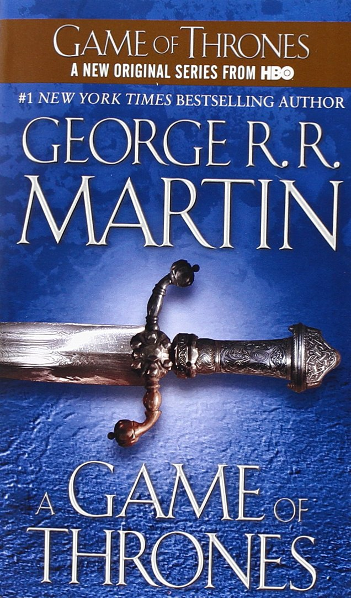
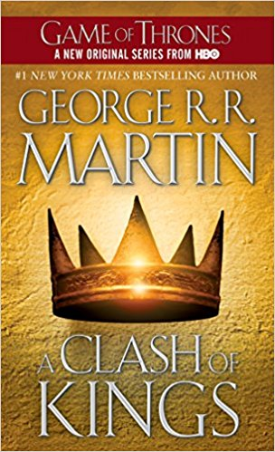
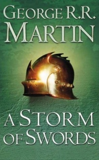
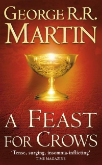

Buchvorlage
 Das Lied von Eis und Feuer, im Englischen A Song of Ice and Fire, ist eine Fantasy-Saga des US-amerikanischen Autors George R. R. Martin. Zwischen 1996 und 2011 sind fünf Bände in der englischen Originalfassung erschienen, zwei weitere sind geplant. In Deutschland existieren verschiedene Ausgaben. Neben einer bisher fünf Bände umfassenden 1:1-Übersetzung ist vor allem die Fassung verbreitet, in der die ursprünglichen fünf Werke in jeweils zwei Bände aufgeteilt wurden, so dass die deutsche Ausgabe in diesem Fall zehn Bände umfasst. Hinzu kommen bislang fünf Novellen, die ca. 100 Jahre vor der Romanhandlung spielen. 2014 erschien ein Handbuch zur Geschichte von Martins Welt.
Das Lied von Eis und Feuer, im Englischen A Song of Ice and Fire, ist eine Fantasy-Saga des US-amerikanischen Autors George R. R. Martin. Zwischen 1996 und 2011 sind fünf Bände in der englischen Originalfassung erschienen, zwei weitere sind geplant. In Deutschland existieren verschiedene Ausgaben. Neben einer bisher fünf Bände umfassenden 1:1-Übersetzung ist vor allem die Fassung verbreitet, in der die ursprünglichen fünf Werke in jeweils zwei Bände aufgeteilt wurden, so dass die deutsche Ausgabe in diesem Fall zehn Bände umfasst. Hinzu kommen bislang fünf Novellen, die ca. 100 Jahre vor der Romanhandlung spielen. 2014 erschien ein Handbuch zur Geschichte von Martins Welt.
A Game of Thrones
 Die letzten Tage des Sommers sind gekommen. Eddard Stark, der Lord von Winterfell, lebt mit seiner Familie im kalten Norden des Königreichs Westeros, und er weiß, dass der nächste Winter Jahrzehnte dauern wird. Als der engste Vertraute seines Königs und alten Freundes Robert Baratheon stirbt, soll Eddard an dessen Stellen treten. Für die Zeit, die er am Königshof zubringen muss, überträgt Eddard die Herrschaft über Winterfell an seinen Erben Robb – während sich sein Bastardsohn Jon den Kriegern der Nachtwache anschließt. Doch Robert Baratheon ist nicht mehr der starke Herrscher, der er einst war, und um den Eisernen Thron scharen sich Intriganten und feige Meuchler. Eddard sieht sich plötzlich von mächtigen Feinden umzingelt und muss hilflos zusehen, wie seine vielköpfige Familie in alle Winde verstreut wird. Die Zukunft des gesamten Reiches Westeros steht auf dem Spiel…
A Clash of Kings
 Eddard Stark, der Herrscher über den Norden des Reiches, ist tot. Sein Sohn Robb muss bereits im Alter von fünfzehn Jahren die Verantwortung für Winterfell und die zugehörigen Lehen übernehmen. Robbs Schwestern Sansa und Arya sehen ebenfalls einem ungewissen Schicksal entgegen: Sansa kauert im Schatten des wahnsinnigen Thronfolgers in King's Landing und muss täglich um ihr Leben bangen. Arya ist es gelungen, aus der Hauptstadt zu fliehen, doch es ist ungewiss, ob sie jemals nach Winterfell zurückkehren wird. Auf dem Thron der Sieben Königreiche sitzt der dreizehnjährige Joffrey Baratheon, der bösartige und unberechenbare Sohn von Robert I. Selbst Königin Cersei, seine Mutter und die eigentliche Regentin, kann ihn kaum noch im Zaum halten. Überall herrscht Bürgerkrieg. Die Fürsten bekennen sich zwar der Form halber zu den verschiedenen Königshäusern, doch jeder verfolgt seine eigenen Ziele.
A Storm of Swords
 Unheilvolle Ruhe herrscht in den Sieben Königslanden. Die Lage in Westeros stabilisiert sich, ein endgültiger Sieg der herrschenden Lennisters ist in greifbare Nähe gerückt. Allmählich kehren Gesetz und Ordnung in weite Teile des vom Krieg verwüsteten Landes zurück. Doch die Königin Regentin findet keine Ruhe. Nach dem tragischen Verlust ihres erstgeborenen Sohnes und der Hochzeit ihres zweitgeborenen, des Kindkönigs Tommen, mit der ungeliebten Margaery Tyrell drehen sich ihre Gedanken nur noch um die Frage, wie sie der künftigen Königin eine Falle stellen kann, um deren Regentschaft zu verhindern. Während sie bei Hof Ihre Intrigen spinnt, beginnt es im Süden erneut zu brodeln, und die Eisenmänner holen zu einem vernichtenden Schlag gegen das Reich aus. Cersei verliert zunehmend die Fähigkeit, zwischen Freund und Feind zu unterscheiden: So verleiht sie den Predigern des wieder erwachten Glaubens große Macht und übersieht dabei, wie leicht die gesponnenen Ränke sich gegen sie selbst richten können...
A Feast for Crows
 Der Krieg der Fünf Könige ist vorbei. Dieser Krieg hat nicht nur den Starks, den Baratheons, den Lennisters und den Graufreuds, sondern auch den anderen großen und kleinen Häusern einen entsetzlichen Blutzoll abverlangt. Weite Teile von Westeros sind verwüstet, die Ernten vernichtet. Und der Winter naht unbarmherzig. Der Kindkönig Tommen Baratheon auf dem Eisernen Thron ist viel zu jung, um wirklich zu regieren, und seine Mutter, die Regentin Cersei Lennister, ist nach dem Tod ihres Vaters Lord Tywin vor allem damit beschäftigt, ihre Macht zu erhalten und sich gegen zahlreiche Rivalen zu verteidigen. In Dorne verlangen die Sandschlangen, die Töchter von Prinz Oberyn Martell, lautstark Rache für den erschlagenen Prinzen. Und Prinzessin Arianne, Fürst Dorans Tochter, verfolgt eigene gefährliche Pläne. Auf den Eiseninseln brechen nach dem Tod von König Balon Graufreud Nachfolgestreitigkeiten aus, während Brienne, die Jungfrau von Tarth, eine Mission verfolgt, die von Beginn an zum Scheitern verurteilt zu sein scheint. Die Zeit der Krähen bricht an - und ohne eine starke Hand droht dem Reich der Untergang...
A Dance with Dragons
 Die Sieben Königreiche zerfallen weiter im Machtkampf der großen Adelshäuser, die einander eifersüchtig belauern in ihrer Gier nach dem Eisernen Thron. Einigkeit finden sie nur in ihrem Misstrauen gegen Daenerys Targaryen, der rechtmäßigen Erbin der Krone. Gemeinsam mit ihren drei Drachen und einer stetig wachsenden Armee greift sie vom Osten aus nach der Herrschaft über Westeros. Die größte Gefahr droht derweil jedoch aus dem Norden, wo schreckliche Geschöpfe sich erheben, um die Menschen des Südens zu überrennen. Allein Kommandant Jon Schnee und seine wenigen tapferen Männer von der Nachtwache stemmen sich verzweifelt gegen diese finstere Übermacht...
Die Sieben Königreiche zerfallen weiter im Machtkampf der großen Adelshäuser, die einander eifersüchtig belauern in ihrer Gier nach dem Eisernen Thron. Einigkeit finden sie nur in ihrem Misstrauen gegen Daenerys Targaryen, der rechtmäßigen Erbin der Krone. Gemeinsam mit ihren drei Drachen und einer stetig wachsenden Armee greift sie vom Osten aus nach der Herrschaft über Westeros. Die größte Gefahr droht derweil jedoch aus dem Norden, wo schreckliche Geschöpfe sich erheben, um die Menschen des Südens zu überrennen. Allein Kommandant Jon Schnee und seine wenigen tapferen Männer von der Nachtwache stemmen sich verzweifelt gegen diese finstere Übermacht...